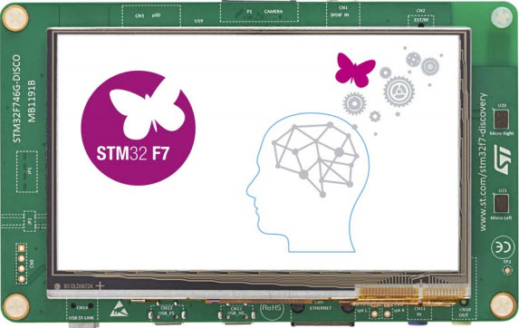

STM32F7 Basic System
This is a basic system for the STM32F746G-DISCO Board.
It includes the following components at the moment:
Display
SD-Card
USB
Flash
USB_HID - FS
TCP/IP
USB MSC to SD-Card - HS
HTTP Client
Find it here on GitHub.
